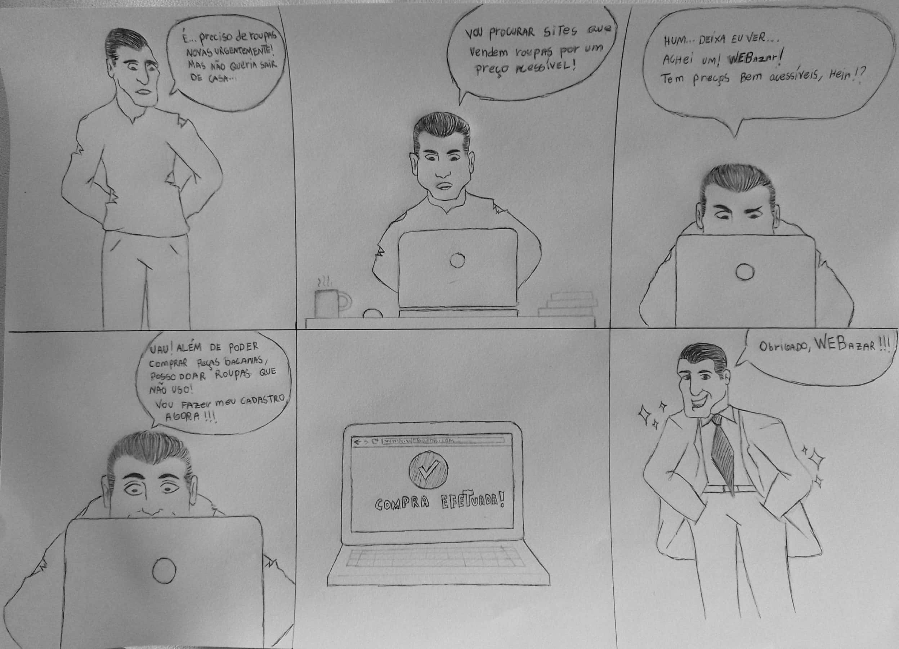

Design Sprint
Design Sprint
A Design Sprint é um processo constituído por cinco etapas desenvolvido pela Google Ventures, que utiliza o design thinking com o objetivo de reduzir o risco ao elaborar um novo produto.
Neste processo, estima-se que suas atividades sejam realizadas em um período de 5 dias. A grande vantagem em relação às demais metodologias é que ao invés de esperar o lançamento de um MVP (Minimum Viable Product), atividade que pode durar meses, o Design Sprint foca especificamente na validação da ideia com usuários e encurta o processo para 40 horas de trabalho (5 dias, com 8 horas semanais).
Dentro desse período, são distribuídas e realizadas atividades diárias: Unpack, Sketch, Decision, Prototype e Tet. A configuração para o nosso trabalho, tendo em vista as viabilidades, se deu da seguinte maneira:
Unpack - (20/06/2022)
Para realizar a definição, a equipe decidiu fazer a reunião via Teams, em que foi designado para cada membro uma tarefa a ser realizada. Também foi decidido que todos os membros elaborariam o 5W2H, e em um encontro posterior seria escolhido o melhor artefato.
Conforme será mostrado mais adiante, a equipe também realizou nesta atividade, por meio da técnica de brainstorming, um mapa mental com o objetivo de produzir um levantamento razoável do escopo da solução.
Sketch - (23/06/2022)
Na parte do Sketch, cada membro da equipe apresentou, de acordo com seu entendimento e ponto de vista a respeito da solução, um desenho do Rich Picture por eles realizado a fim de que fosse posteriormente definido o design que mais se adequasse ao projeto.
Decision - (23/06/2022)
A escolha do melhor desenho foi realizada por meio de apresentação dos rich pictures de cada membro, e, logo em seguida, foi escolhido o desenho mais completo por meio de uma votação. Tal desenho será apresentado adiante com maior riqueza de detalhes.
Decidiu-se também a respeito da storyboarding que serviria como suporte para o processo de prototipação.
Aqui está o resultado:

Prototype - (25/06/2022)
- Protótipo de média/baixa fidelidade:
- Protótipo de alta fidelidade:
### Validação Foi elaborado um questionário para a avaliação do protótipo de alta fidelidade, em que busca coletar dados para que possamos melhorar nosso protótipo.
Link do questionário: https://forms.gle/onMYMHZX3kvA1dxr8
## Resultados


| Versão | Data de modificação | Descrição da modificação | Autor(es) | Revisor(es) |
|---|---|---|---|---|
| 1.0 | 25/06/2022 | Adição Design Sprint | Eduardo Gurgel, Arthur Talles | |
| 1.1 | 26/06/2022 | Adição de informações complementares para o Design Sprint,Storyboard e Protótipo de baixa/média fidelidade | Arthur Talles | Eduardo Gurgel |